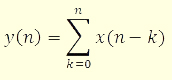

Лабораторная работа №2
Средства синхронизации потоков
-
Цель работы - научиться синхронизировать многопоточные приложения, используя объекты синхронизации Windows.
Общее задание
Создать многопоточное приложение (2,3 или больше потоков) c разделяемым ресурсом, к которому пытаются получить доступ эти потоки. Это может быть глобальная переменная, массив, строка и т. д. Синхронизировать работу потоков.
Задание по вариантам
Вариант 1
Синхронизировать потоки с использованием критических секций.
В качестве наглядного отображения работы потоков добавить на форму для
каждого потока компонент ProgressBar.
Вариант 2
Реализовать алгоритм Деккера для двух потоков.В качестве наглядного
отображения работы потоков вывести какой из них первым выполняется и
в течение какого времени.
Вариант 3
Синхронизировать потоки с использованием классического семафора.
Одновременно должны иметь возможность выполняться 3 потока из 8. Вывести
какие потоки выполняются в данное время.
Вариант 4
Синхронизировать потоки с использованием исключающего семафора(с
использованием вызова функций CreateSemaphore, ReleaseSemaphore и т.д.)
Обеспечить одновременное выполнение 3 из 7 возможных.
Вариант 5
Создать 3 потока. Первый выводит первоначальное значение разделяемого
ресурса, второй - изменяет его, третий - выводит измененное значение.
Синхронизировать их работу с помощью мьютексов.
Вариант 6
Синхронизировать работу 4 потоков с помощью мьютексов. Вывести время
выполнения критической секции каждого из них.
Вариант 7
Создать 3 потока. Первый выводит первоначальное значение разделяемого
ресурса, второй - изменяет его, третий - выводит измененное значение.
Вариант 8
Синхронизировать работу 2 потоков с использованием событий.
Вариант 9
Создать 2 потока и синхронизировать их работу с использованием ожидаемых
таймеров, так чтобы второй поток начинал выполнение через 5 секунд после
начала выполнения первого потока.
Вариант 10
Создать 3 потока. Первый выводит первоначальное значение разделяемого
ресурса, второй - изменяет его, третий - выводит измененное значение.
Синхронизировать их работу с помощью таймеров, так чтобы они выполнялись
с интервалом в 5 секунд.
Вариант 11
Создать 2 потока с использованием класса Thread (.NET) и синхронизировать их с
использованием блокирующих переменных.
Вариант 12
Создать 2 потока с использованием функций API и синхронизировать их с
использованием блокирующих переменных.
Вариант повышенной сложности
-
Синхронизация потоков с использованием событий (event), семафоров и мьютексов.
Создать приложение с тремя потоками. Один поток позволяет считывать данные из
файла, второй поток позволяет вычислять накопление сигнала, третий поток
позволяет отображать данные и результат накопления.
С помощью объектов событие,
семафоры и мьютексы, синхронизировать потоки так, чтобы данные могли считываться
в один массив, и копировались в другой в одном потоке, накопление и отображение
данных происходило одновременно, а отображение результата обработки одновременно
с считыванием данных.
Накопление осуществляется по формуле:

[В начало документа]
[Оглавление]